Scene 1Warm-Up
▶ Start hereHow your Wonder Films lessons work1-minute videoOpen ▾
🎯 TodayI can…
- test three different methods to clean up simulated water pollution.
- compare my results and describe which cleanup method worked best and why.
- make a claim about which solution would be most useful in a real cleanup situation.

🔎 Mystery specimenWhat are these white tubes on the beach?
What to do: Press Inspect specimen. Move the magnifying lens over the beach, then tap 3 things you notice.

📚 Word WallWords scientists use
What to do: Tap or click each card to flip it and read what the word means. Tap 🔊 to hear the word.
Scene 2The Lesson
💧 Part 1What Does Pollution Do to Water?
Pollution gets into rivers, lakes, and the ocean from oil spills, trash, and chemicals that wash off farms. Once it mixes in, the water is contaminated. Animals that live in it or drink it can get sick, and plants can die.
Most oil is lighter than water, so it floats on top and spreads out in a thin, shiny layer.
🎞️ Put the scenes in orderHow do crews clean up an oil spill?
What to do: Drag each photo into the film strip, from first to last. You can also tap a photo, then tap a frame. Get the order right and your strip becomes a movie.
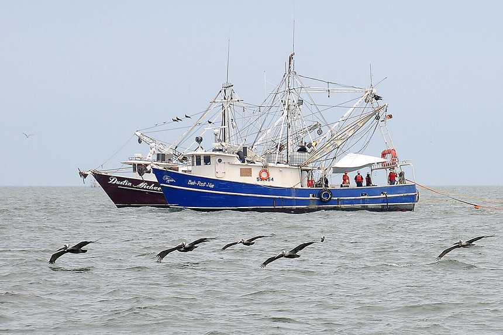
Oil spills into the sea. Where does most of it go?
🧹 Part 2Three Ways to Clean Up Pollution
Engineers test different cleanup methods to find out which works best.
🧻 Absorb: a pad or sponge soaks up floating oil. 🔽 Filter: water passes through something that traps the pollution. 🥄 Skim: a net, spoon, or boat scoops floating stuff off the top.
🧪 Try the real cup test (with an adult)
Fill 3 clear cups halfway with water and stir 1 teaspoon of cooking oil into each. Cup 1: lay a paper towel on top for 30 seconds (absorb). Cup 2: pour it through a coffee filter (filter). Cup 3: scoop with a spoon for 60 seconds (skim). Rate each one 1, 2, or 3.
🧪 The Spill TestWhich tool cleans up which mess?
What to do: Follow the steps one at a time. You will pick, test, and then explain.
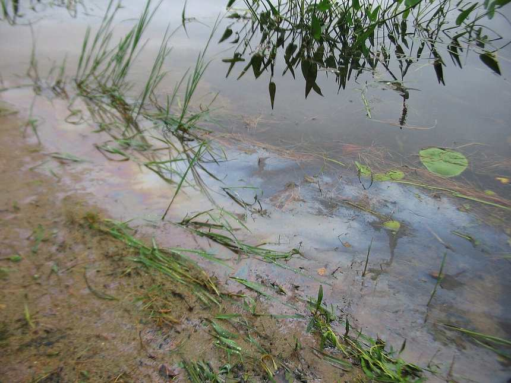
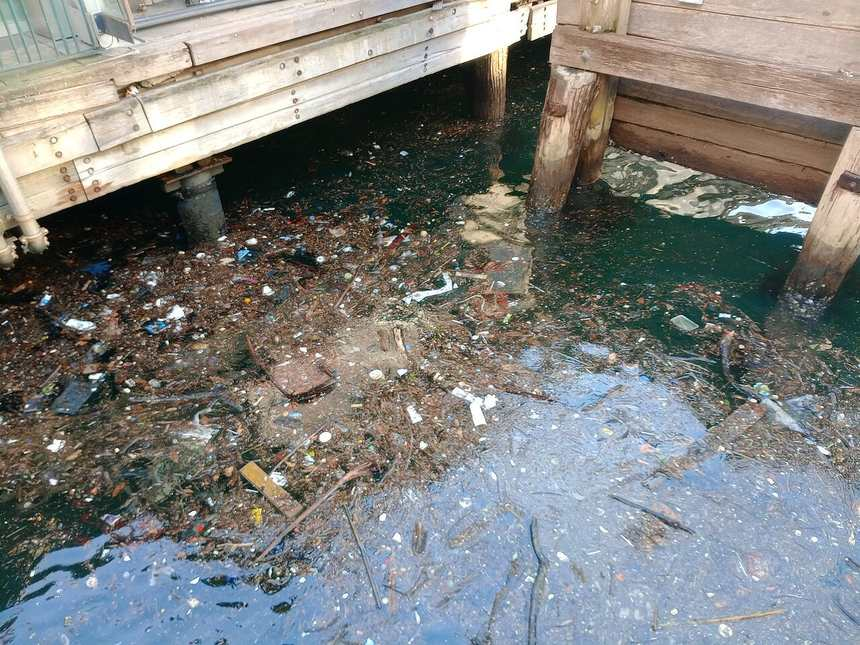
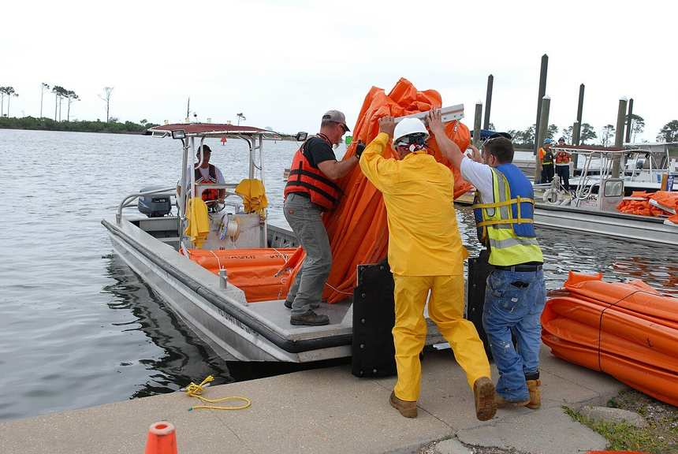
⭐ Part 3Why Choosing the Right Method Matters
Not every method works the same way. A net can't catch a thin film of oil, and a pad can't pick up a floating bottle. Some pollution, like fertilizer, dissolves (mixes in so you can't see it), so it has to be filtered out.
After the 2010 Gulf oil spill, crews used booms, skimmers, and absorbent pads side by side, picking the right tool for each place.
🌾 Nature's filterFollow the water through a filter marsh
What to do: First, make a prediction. Then brush the glowing stop: drag across it (or tap it again and again) until the place shows.
Can plants in a marsh really clean dirty water?
marshMarsh
plantsThe
Everglades
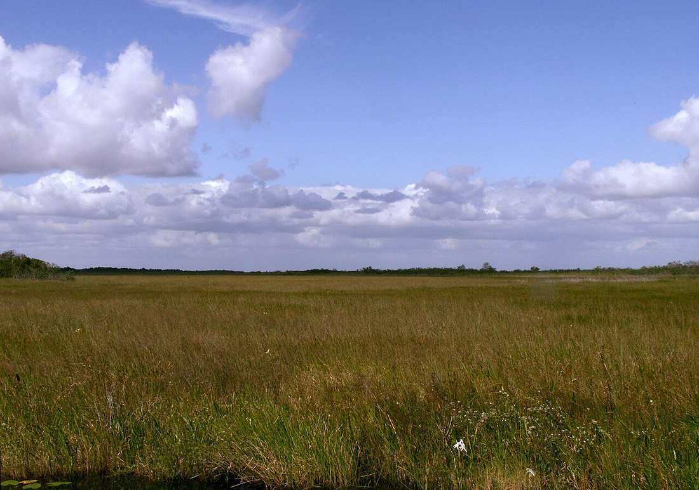
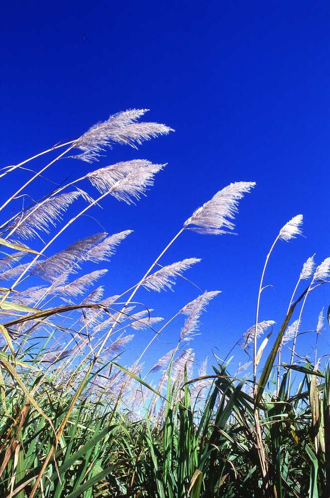
Stop 1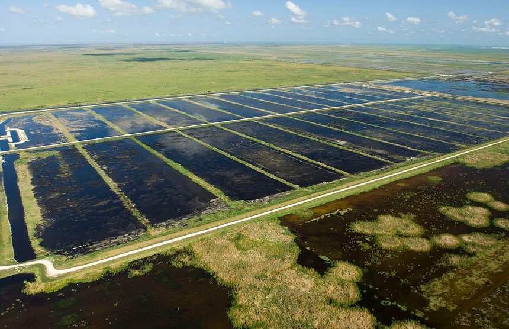
Stop 2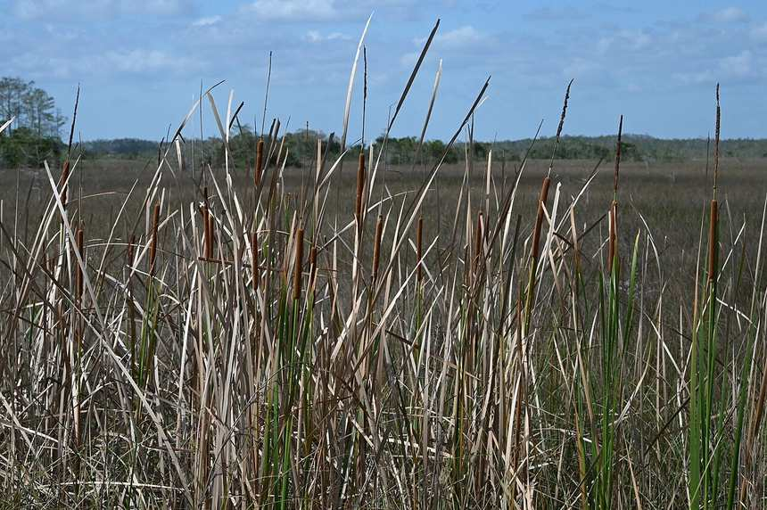
Stop 3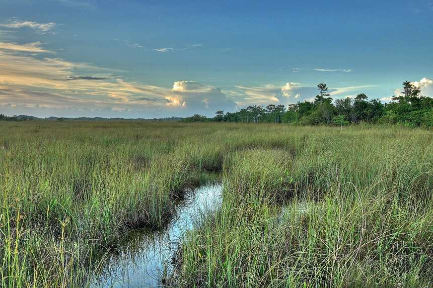
Stop 4Plants can be a filter. A filter marsh traps pollution that a net or a pad could never catch, because fertilizer dissolves in the water. People still have to keep the marshes working.
A town wants ONE cleanup tool for every kind of water pollution. Will that work?
Oysters: living filters
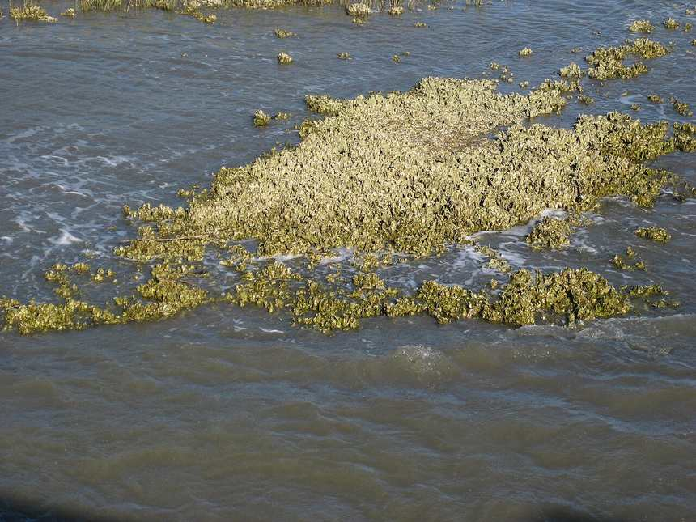
One grown-up oyster can filter up to about 50 gallons of water a day as it pulls in water to eat tiny bits of food. A whole reef of oysters cleans a lot of water.
That's why people in Florida, from Tampa Bay to the Indian River Lagoon, are building new oyster reefs. It's a cleanup method that is alive.
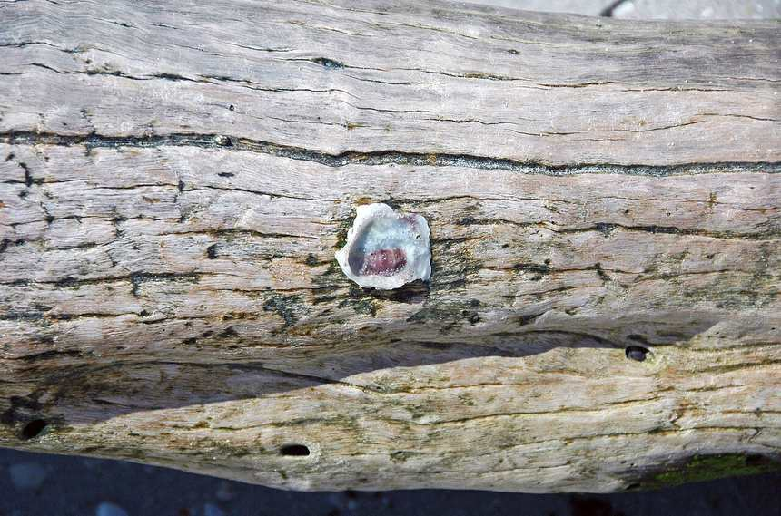
🕵️ Part 4Did the Cleanup Work?
What to do: Pick 3 cases, one at a time. Tap a clue, then pick the cleanup method. Predict whether it worked, and watch the place today appear.
| Case | My observation | Cleanup method | Did it work? | My evidence |
|---|
🌍 Rebuild the placeUse your evidence to rebuild the place OPTIONALOpen ▾
What to do: Pick one you solved. Pick the place it points to, then pick the living things that belong there.
Pick one from your chart and explain it.
Start with: "Case __ shows…"
Scene 3Self-Check
What does it mean for a cleanup method to be effective?
Why do scientists test more than one cleanup method before choosing one?
A team is cleaning oil off the surface of a lake in a national park. Which tool would most likely remove the floating oil?
Scene 4Assignment
🔍 Part AReview and rate
What to do: Read each one. Pick the best answer, or type your answer.
1. A student did the real cup test and rated each method from 1 (low) to 3 (high). Build a bar graph of the ratings. Make each bar match its number in the table.
How well did each method remove the oil?
| Effectiveness rating | |
|---|---|
| Absorb | 3 |
| Filter | 2 |
| Skim | 1 |
Tap inside a bar's column at the right height, or use ＋ and －, until each bar matches the table. Then press Check my graph.
2. Which method got the highest rating?
3. Using this data, which method would you NOT pick first for a thin oil spill?
4. What happened to the absorbent pad in the Spill Test when you put it under the oil? Describe what you saw.
🚀 Part BShort answer
What to do: Answer in complete sentences. Use your science words.
1. Why does oil float on top of the water instead of mixing in? How does that change which cleanup method works best?
2. How is a cup test different from a real oil spill in a national park waterway? Name one thing that would be harder in real life.
✍️ Write and explainWhich cleanup method would you recommend, and why?
What to do: Pick one from your evidence chart. Answer the three questions. Use at least two of the science words under the boxes.
Start with: "If I were an engineer cleaning up a lake, I would recommend… because…"
Start with: "In the Spill Test, I noticed that…"
Start with: "This makes sense because…"
🎨 Part CDraw and label
What to do: Draw a polluted lake before and after a cleanup with your best method. Label the pollution and the tool, and one living thing that is helped.
🎬 Your question from Scene 1Can you answer it now?
What do you still wonder about? Write your question here. Then answer it.
📋 My answersEverything you wrote, in one place
(Your answers show up here as you write.)
How to turn in: Copy your answers and paste them into the Canvas assignment. Or download the file and upload it. Then press Save my drawing in Part C and upload your drawing too.
✅ Checklist
What to do: Tap each item when it is done. Items you finish on the page check themselves.
- My evidence chart has 3 cases and my explanation.
- Part A: my bar graph and all my answers.
- Part B: questions 1 and 2.
- Part C: my drawing and both labels.
- Write and explain, with at least two science words.
🎬 Premiere my cleanup storyYour exhibit
What to do: Check your exhibit. Pick the one you wrote about, add your first name, then press Premiere film.
I observed…
The crew used…
My evidence…
It tells us…
🎞️ This film's frames
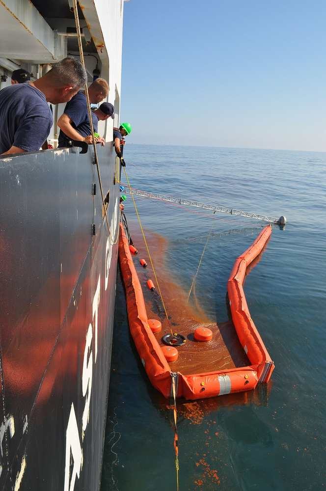
The spill cleanup
The Spill Test
Nature's filter

Did it work?
Earn all four frames in the Lesson, then finish the checklist.
🔜 Coming up next24.01 · What Is Conservation?
Next time, find out what conservation means and how people protect wild places before they need a cleanup.
Photo and music credits
- US Navy 100430-N-6268N-041 Contract employees with BP America, Inc. load an o…, U.S. Navy photo by Patrick Nichols, Public domain
- Deepwater horizon beach tar cleanup, Aaron Sussell, NIOSH (CDC), Public domain
- Long Hair Beach, Mona Ruby Farley, CC BY-SA 4.0
- REPUBLIC STEEL DISCHARGES WASTE WATER INTO THE CUYAHOGA RIVER - NARA - 550218, Frank John Aleksandrowicz, Public domain
- Three Kayaks on the Cuyahoga (cd03c6ab-3806-4d65-8721-6a9eb2954e33), NPS, Public domain
- Mr. Trash Wheel (27582099121), Matthew Bellemare, CC BY-SA 2.0
- Baltimore's Inner Harbor, viewed from a slope of Federal Hill Park, Sdkb, CC BY-SA 4.0
- Exxon Valdez Cleanup, PH2 POCHE, Public domain
- Prince William Sound, South Central, Alaska, U.S.A, GPA Photo Archive / NOAA Photo Library, CC BY 2.0
- BP Contractors deploy sorbent boom (5014749273), Tom MacKenzie, U.S. Fish and Wildlife Service, Public domain
- Eastern Brown Pelican Flying 08, Amaury Laporte, CC BY 2.0
- Canal Point Florida Sugarcane from Air 1968, Andrew Migneault, Public domain
- Stormwater Treatment Area in Northern Everglades, U.S. Geological Survey, Public domain
- Periphyton, NPSPhoto, R. Cammauf (9101394590), Everglades NPS from Homestead, Florida, United States, Public domain
- Sunset in Shark Valley (53602648403), evergladesnps, Public domain
- Removing Tar Balls (8744528336), Aaron Sussell, NIOSH (CDC), Public domain
- Oil-containment boom deployed from MV Poppa John 2010-05-03, PO3 Patrick Kelley, Public domain
- Pelican release - DPLA - 1d379c3a1dcb795fb6c6a453ad7b6c4f, Department of the Interior. U.S. Fish and Wildlife Service. , Public domain
- Oil slick 2 (4930657644), USFWS/Southeast, Public domain
- Pensacola Beach - White Sands, Florida Coast (27268946483), Tony Webster from Minneapolis, Minnesota, United States, CC BY-SA 2.0
- Female brown pelican being rinsed following extensive cleaning at the Theodor…, U.S. Fish and Wildlife Service Southeast Region, Public domain
- Crassostrea virginica (eastern oyster) encrusting a log (Cayo Costa Island, F…, James St. John, CC BY 2.0
- Sugarcane field, Scott Bauer, Public domain
- Everglades Stormwater Treatment Areas, September 20, 2014 (15836177632), USEPA Environmental-Protection-Agency, Public domain
- Typha domingensis kz08, Krzysztof Ziarnek, Kenraiz, CC BY-SA 4.0
- Sawgrass Prairie NPS Photo G Gardner (42295786392), evergladesnps, Public domain
- Deepwater Horizon explosion oil spill Gulf of Mexico, U.S. Coast Guard (2010), Public domain
- Shrimp boats tow fire-resistant oil-containment boom in Gulf of Mexico 2010-0…, PO3 Patrick Kelley, Public domain
- Deepwater Horizon oil spill skimming response, Jason Radcliffe, Public domain
- OIl sheen and oil-soaked sorbent boom and hard boom at bay jimmy (5014748115), U.S. Fish and Wildlife Service Southeast Region, Public domain
- Shrimp boats tow fire-resistant oil-containment boom in Gulf of Mexico 2010-0…, PO3 Patrick Kelley, Public domain
- Everglades Sawgrass Prairie Moni3, Moni3, CC BY 3.0
- May 14, Sorbent boom in the waves, Grand Isle, La (4666451470), USEPA Environmental-Protection-Agency, Public domain
- Oil sheen on pond, Jomegat, CC BY-SA 3.0
- Garbage floating around in Circular Quay, MrActiniuM, CC BY-SA 4.0
- Oyster reef Hunting Island SC, Jstuby at English Wikipedia, Public domain
- Music: Gioachino Rossini, William Tell Overture (finale), played by "The President's Own" United States Marine Band (2000), public domain (via Wikimedia Commons).
- Opti the owl: Optima Academy. Sound effects are made by the page. The film tells the story of the 2010 Gulf oil spill with real photos from different places along the Gulf. The spill movie, the Spill Test, and the filter-marsh trip are models; every place photo is real. The bar graph uses sample ratings from a cup test.